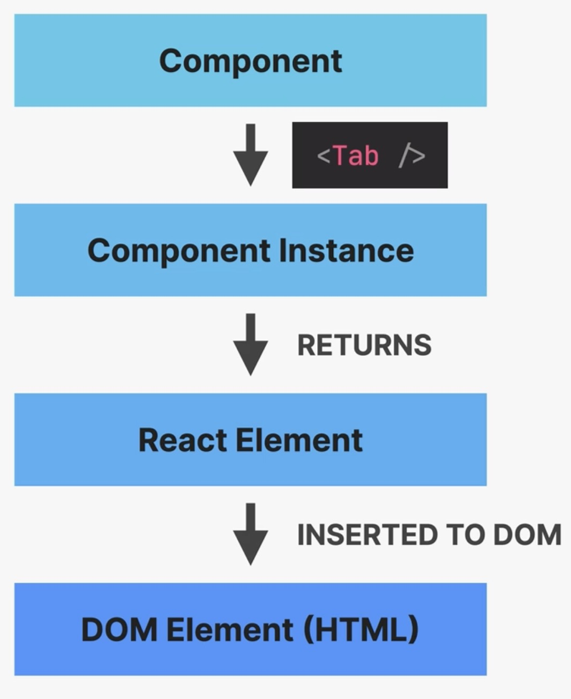

Components, Instances and Elements
a component is a function, which returns an element using JSX
an instance is a copy of a component
JSX is converted to
React.createElement()function calls, resulting in an elementa React Element is converted to a DOM Element (HTML)


Component, Instance, Element
Component instances can be logged to console using JSX:
function MyComponent() {
return <div>hell</div>;
}
console.log(<MyComponent/>);
React calls the MyComponent() function, which returns a Component instance.
Calling a component function directly simply returns the React element (which we don’t want), not the component instance - never do this!:
console.log(MyComponent());
Similarly, when calling the Component function directly within a JSX, for example:
function Tabbed({ content }) {
const [activeTab, setActiveTab] = useState(0);
return (
<div>
<div className="tabs">
<Tab num={0} activeTab={activeTab} onClick={setActiveTab} />
<Tab num={1} activeTab={activeTab} onClick={setActiveTab} />
<Tab num={2} activeTab={activeTab} onClick={setActiveTab} />
<Tab num={3} activeTab={activeTab} onClick={setActiveTab} />
</div>
{activeTab <= 2 ? (
<TabContent item={content.at(activeTab)} />
) : (
<DifferentContent />
)}
{TabContent({ item: content.at(0) })}
</div>
);
}
that component is rendered and displayed, but not added to the component tree.
Moreover, the TabContent element above becomes a prop of the parent component (Tabbed),
for instance not allowing it to manage its own state.